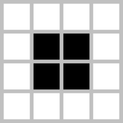
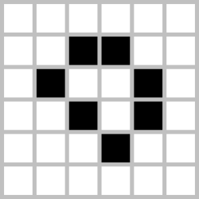

def init(dimx, dimy):
import numpy as np
cells = np.zeros((dimy, dimx), dtype=int)
pattern = np.array([
[0,0,0,0,0,0,0,0,0,0,0,0,0,0,0,0,0,0,0,0,0,0,0,0,1,0,0,0,0,0,0,0,0,0,0,0,0,0,0],
[0,0,0,0,0,0,0,0,0,0,0,0,0,0,0,0,0,0,0,0,0,0,1,0,1,0,0,0,0,0,0,0,0,0,0,0,0,0,0],
[0,0,0,0,0,0,0,0,0,0,0,0,1,1,0,0,0,0,0,0,1,1,0,0,0,0,0,0,0,0,0,0,0,0,1,1,0,0,0],
[0,0,0,0,0,0,0,0,0,0,0,1,0,0,0,1,0,0,0,0,1,1,0,0,0,0,0,0,0,0,0,0,0,0,1,1,0,0,0],
[1,1,0,0,0,0,0,0,0,0,1,0,0,0,0,0,1,0,0,0,1,1,0,0,0,0,0,0,0,0,0,0,0,0,0,0,0,0,0],
[1,1,0,0,0,0,0,0,0,0,1,0,0,0,1,0,1,1,0,0,0,0,1,0,1,0,0,0,0,0,0,0,0,0,0,0,0,0,0],
[0,0,0,0,0,0,0,0,0,0,1,0,0,0,0,0,1,0,0,0,0,0,0,0,1,0,0,0,0,0,0,0,0,0,0,0,0,0,0],
[0,0,0,0,0,0,0,0,0,0,0,1,0,0,0,1,0,0,0,0,0,0,0,0,0,0,0,0,0,0,0,0,0,0,0,0,0,0,0],
[0,0,0,0,0,0,0,0,0,0,0,0,1,1,0,0,0,0,0,0,0,0,0,0,0,0,0,0,0,0,0,0,0,0,0,0,0,0,0]
])
pos = (3,3)
cells[pos[0]:pos[0]+pattern.shape[0],
pos[1]:pos[1]+pattern.shape[1]] = pattern
return cellsStructured Programming Lecture Notes
Cleanly Coding the Game of Life Using Functions
P. Alexander Burnham
20 March 2026
Objective:
Here we will use structured programming to code up Conway’s Game of Life using a driver script and helper functions in a properly structured repository. This kind of structure is necessary as projects increase in complexity and code bases correspondingly increase in size.
Conway’s Game of Life
Conway’s Game of Life is a cellular automaton (CA) developed by mathematician John Conway in 1970. It demonstrates how simple local rules can generate complex global behavior.
The world is represented as a 2‑D grid of cells where each cell can be:
- Alive (1)
- Dead (0)
Time progresses in discrete steps, and all cells update simultaneously based on the number of living neighbors.
Why the Game of Life is Important
Despite its simple rules, the Game of Life can produce:
- Stable structures
- Repeating cycles
- Moving organisms
- Extremely complex emergent systems
Because of this, cellular automata are studied in:
- complex systems science
- theoretical biology
- artificial life
- computation theory
Rules of the Game of Life
At every time step, the state of each cell is updated using the following rules:
Underpopulation Any live cell with fewer than 2 live neighbors dies.
Survival Any live cell with 2 or 3 live neighbors survives.
Overpopulation Any live cell with more than 3 live neighbors dies.
Reproduction Any dead cell with exactly 3 live neighbors becomes alive.
These simple rules create surprisingly rich dynamics.
Cellular Automata Neighborhoods
In cellular automata, the neighborhood determines which nearby cells influence a given cell.
Moore Neighborhood
The Moore neighborhood includes the eight surrounding cells.
X X X
X O X
X X XO= focal cellX= neighboring cells
Total neighbors: 8
This is the neighborhood used in Conway’s Game of Life.
Von Neumann Neighborhood
The Von Neumann neighborhood includes only orthogonal neighbors.
. X .
X O X
. X .Total neighbors: 4
This neighborhood is often used in diffusion models and lattice simulations.
Extended Moore Neighborhood
An Extended Moore neighborhood increases the radius of interaction.
Example (radius = 2):
X X X X X
X X X X X
X X O X X
X X X X X
X X X X XTotal neighbors: 24
Extended neighborhoods allow longer‑range interactions.
Categories of Game of Life Patterns
Game of Life patterns are often grouped into three main categories.
1. Still Lifes (Static Patterns)
Still lifes do not change over time.
Block

Loaf

These structures remain stable because every cell satisfies the survival rules.
2. Oscillators (Cyclic Patterns)
Oscillators cycle through repeating states.
Blinker (period 2)

Toad (period 2)

Oscillators eventually return to their original configuration after a fixed number of time steps.
3. Spaceships (Moving Patterns)
Spaceships move across the grid over time.
Glider

Spaceships demonstrate how information can propagate through the system.
Structured Programming
Repository Structure:
- Root Folder (Name of Repository)
- driver.py
- readme.txt
- .gitignore
- license.txt
- data (folder):
- data1.csv
- data2.tif
- data3.txt
- functions (folder):
- function_1.py
- function_2.py
- function_3.py
- figures (folder):
- figure_1.pdf
- figure_2.pdf
- documents (folder):
- manuscript_draft_1.md
- grant_proposal.docx
Functions for game of life:
Function 1: init()
This function is stored in a file called init.py.
Function 2: draw()
This function is stored in a file called draw.py.
def draw(surface, cells, cellsize):
import numpy as np
import pygame
alive_cells = np.argwhere(cells == 1)
col_alive = (255,255,215)
for r, c in alive_cells:
pygame.draw.rect(surface, col_alive,
(c*cellsize, r*cellsize, cellsize-1, cellsize-1))Function 3: update_fast()
This function is stored in a file called update.py.
def update_fast(cells):
"""Vectorized Game of Life update"""
import numpy as np
neighbors = (
np.roll(np.roll(cells, 1, 0), 1, 1) +
np.roll(np.roll(cells, 1, 0), 0, 1) +
np.roll(np.roll(cells, 1, 0), -1, 1) +
np.roll(np.roll(cells, 0, 0), 1, 1) +
np.roll(np.roll(cells, 0, 0), -1, 1) +
np.roll(np.roll(cells, -1, 0), 1, 1) +
np.roll(np.roll(cells, -1, 0), 0, 1) +
np.roll(np.roll(cells, -1, 0), -1, 1)
)
birth = (neighbors == 3) & (cells == 0)
survive = ((neighbors == 2) | (neighbors == 3)) & (cells == 1)
return np.where(birth | survive, 1, 0)Function 4: mouse_to_cell()
This function is stored in a file called mouse.py.
def mouse_to_cell(pos, cellsize):
"""Convert mouse pixel position to grid row, col"""
x, y = pos
col = x // cellsize
row = y // cellsize
return row, colDriver Script:
# Game of Life Interactive Driver
# 20 March 2026
# P. Alexander Burnham
# import libraries
import pygame
import numpy as np
import sys
# import functions
from functions.draw import draw
from functions.init import init
from functions.mouse import mouse_to_cell
from functions.update import update_fast
# some global variables to declare
col_background = (10,10,40)
col_grid = (30,30,60)
# main driver function
def main(dimx, dimy, cellsize):
pygame.init()
surface = pygame.display.set_mode((dimx*cellsize, dimy*cellsize))
pygame.display.set_caption("Game of Life")
clock = pygame.time.Clock()
cells = init(dimx, dimy)
running = False # simulation running or paused
step = False # single-step flag
done = False # loop control
while not done:
for event in pygame.event.get():
if event.type == pygame.QUIT:
done = True
if event.type == pygame.KEYDOWN:
if event.key == pygame.K_ESCAPE:
done = True # safe quit
if event.key == pygame.K_SPACE:
running = not running # toggle pause/run
if event.key == pygame.K_s:
step = True # single-step one generation
if event.key == pygame.K_c:
cells = np.zeros_like(cells) # clear grid
# --- MOUSE EVENTS ---
if event.type == pygame.MOUSEBUTTONDOWN:
row, col = mouse_to_cell(event.pos, cellsize)
if event.button == 1: # left click → add cell
cells[row, col] = 1
elif event.button == 3: # right click → remove cell
cells[row, col] = 0
# draw background
surface.fill(col_grid)
# update grid if running or stepping
if running or step:
cells = update_fast(cells)
step = False # reset step flag after update
# draw alive cells
draw(surface, cells, cellsize)
# update display and control framerate
pygame.display.update()
clock.tick(20) # ~20 FPS for smooth animation
# clean exit
pygame.quit()
pygame.display.quit()
# run main
if __name__ == "__main__":
main(100,70,8)